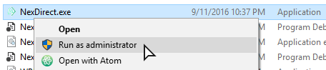
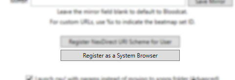
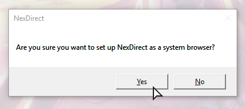
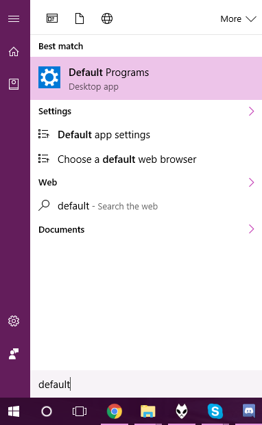
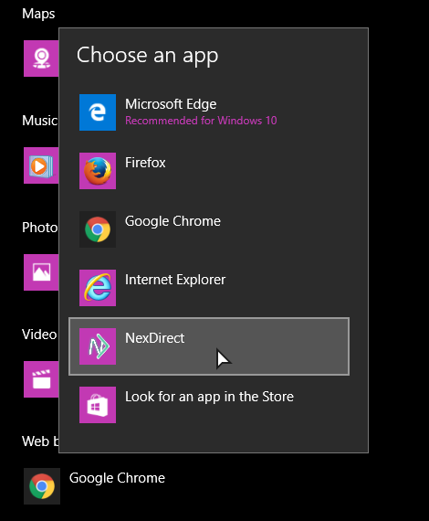
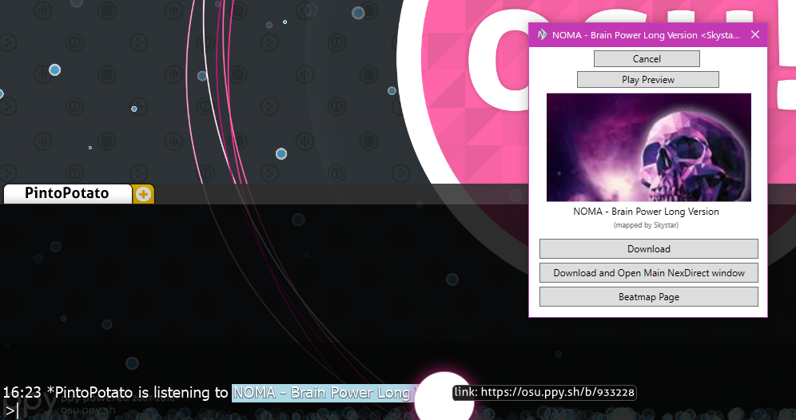

NexDirect - Linker Guide
Step 1
Close NexDirect if you already have it open, and launch it as administrator.

 Register Browser">
Step 2
Register NexDirect as a system browser in the settings pane.Step 3
Click the 'Yes' option and follow through the steps given.


Step 4
Open the Start Menu and search for 'Default Programs', and open the settings page.Step 5
Change the default browser to 'NexDirect'.

End
Click a link in osu!, watch it directly open in NexDirect!Important note: Do not move the NexDirect executable now that you have it all setup, or weird things may happen!
